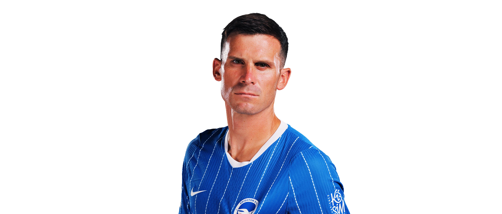

Han föddes 15 juni 1991 i Mannheim Tyskland
Han är 181cm lång
Han är en fotbollsspelare som har erfarenhet i både tyska och engelska högsta divitionen. Han är även spelat i Vm och Em med det Tyskalandslaget. Just nu spelar han i ett av topp lagen i Premier League (Brighton).
